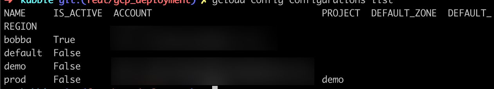
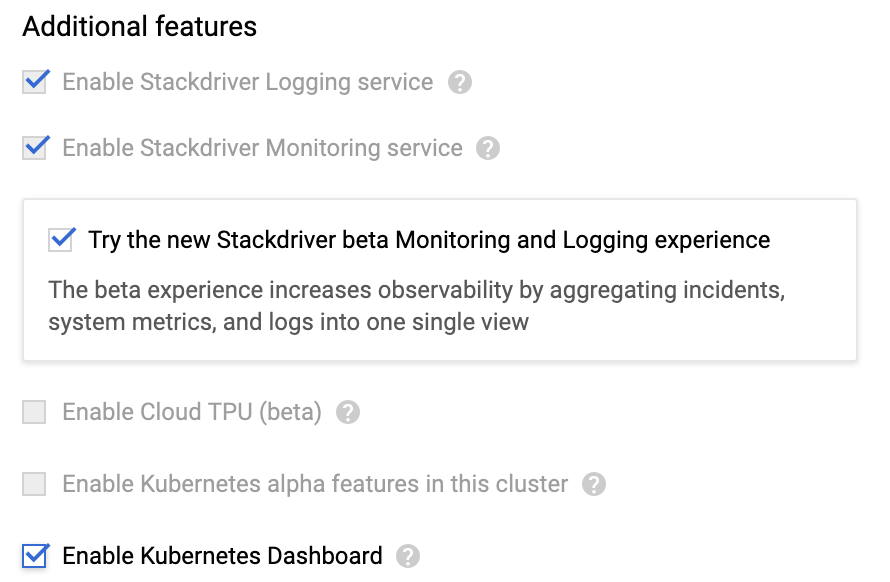
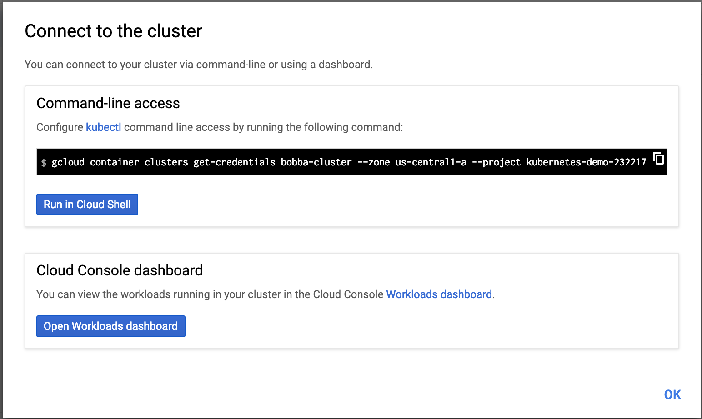
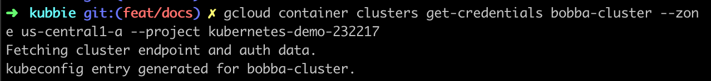

Introduction 📖
We saw how to deploy our small project with Docker. We also saw how to deploy our project on a local Kubernetes cluster by using Minikube. Today we’re going to deploy our project into a real environment, Google Cloud Platform.
Why Google Cloud Platform ❓
Along with Amazon EKS, Google Cloud Platform is one of the most popular deployment platform for Kubernetes. As it’s one of the most used we thought that it would have been interesting for you to learn how to deploy your app on it. Futhermore GCP offer you a $300 on 12months for beginning your journey into GCP. Thus it’s free for you to use during this timespan.
Configuration ⚙️
If you’d follow the previous tutorial on how to deploy your app with Minikube then you shouldn’t be lost. This deployment is going to be pretty much the same. Otherwise I highly suggest you to read the previous set of tutorial on how to deploy an app with Minikube
Before diving into the Google Cloud Platform you need to have obviously a Google account and already have create a Google Cloud Project. If not check how to create a google cloud project here
Requirements ⚙️
Deploying into GCP required you to have installed the components lists below:
- GCloud SDK
- Kubectl
- Docker
- Your favorite editor (vscode, vim, emacs, nano, sublime up to you… maybe Microsoft Word ?)
Configure GCloud SDK ⚙️
If you have already installed & configure GCloud SDK you can skip this section.
Kubectl required an environment context for searching our clusters. In order to do that we need to sync our GCloud SDK so that the Kubectl environment will be sync with our project.
First, let’s create a gcloud configurations by running this command:
gcloud config configurations create bobba
If you run the command
gcloud config configurations list
You should see a list of config like the image below

Now your configurations is created. However it’s not activate yet. Let’s activate it by running this command
gcloud config configurations activate bobba
And the final step. Log into GCloud so that you can retrieve your cluster for later use.
gcloud auth login
Type of cluster
With GCP there are 2 types of cluster.
-
The first type is
zonal. This mean that your nodes & the master will be created in the zone that you choose. E.g you’re creating a cluster in asia-east1-c, your node & master will be located in asia-east1-c -
The second type is
regional. This allow you to choose which region to deploy your application. When choosing the region GCP will create your cluster across the zone of your region.
E.g:
- Region: asia-east1
- Zone: asia-east1-a, asia-east1-b, asia-east1-c
Creating a regional cluster this will create nodes & master in these 3 zones.
Region > Zones.
This kind of cluster has the advantage of reducing the number of downtime as low as possible. However it’s more expensive to use this type of cluster
For the sake of our deployment we’ll choose the zonal cluster
For more information on regional cluster check this link Regional cluster
Configure your cluster ⚙️
If you already have and know how to create a Cluster into GCP, you can also skip this section.
All right, let’s create a Cluster of type Zonal
- Go to your GCP Account
- Go to Kubernetes engine section
- Go to the Cluster option
- Click on the CREATE CLUSTER button
- Use the standard cluster (should be already selected)
- Deploy the
Advanced optionsmenu at the bottom of the webpage
Check the options like below

- Click on the create a button and wait a few minutes for your cluster to be created
Once the Cluster is created click on your cluster and click on the CONNECT button. You should see a popup with a section named Command line access which should look like below

Copy, paste the command-line access to your terminal. You should get a message like so.

Now if you run the command
kubctl config view
You should see the cluster to your list of context like the image below
- cluster:
certificate-authority-data: REDACTED
server: <IP_ADDRESS>
name: gke_kubernetes-demo-232217_us-central1-a_bobba-cluster